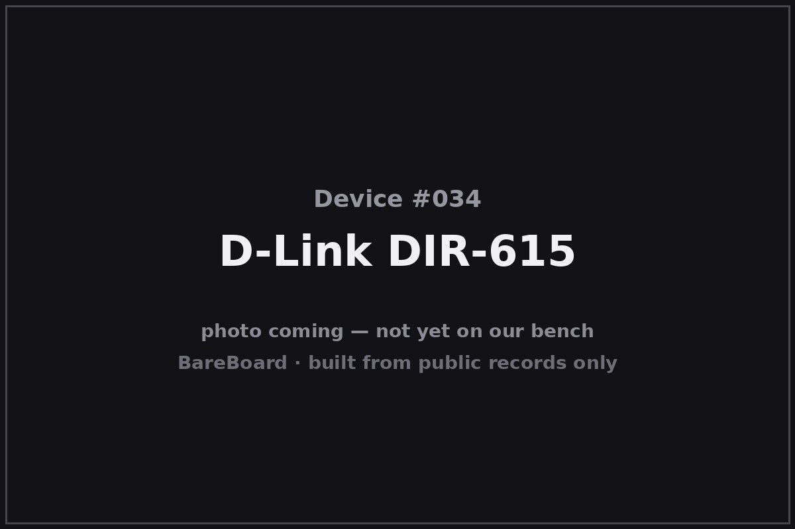

The Autopsy Report · Device #034
The D-Link DIR-615
One model name, a dozen different routers inside — the budget N300 box that taught a generation that the label on the outside is not the hardware on the inside.
What is this thing?
The D-Link DIR-615 is a single-band 802.11n (“N300”) wireless router — up to 300 Mbps on 2.4 GHz, four Fast Ethernet ports, and a price that made it one of the best-selling home routers of its era. It is also the poster child for revision sprawl: D-Link shipped the DIR-615 in hardware revisions from A1 through T1 and beyond, and the chips inside changed completely along the way — Atheros in some, Realtek or MediaTek in others. FCC filing TechInfoDepot (rev T1)
This report pins its primary evidence to hardware revisions E3/E4, covered by the representative FCC filing. Everything revision-specific is labeled as such; nothing here is claimed for the whole alphabet of revisions.
Not on our bench (yet)
This device is not on our bench. We have never owned, opened, photographed, measured, or powered on the DIR-615. Everything in this report comes from public records: government filings, manufacturer documents, manuals, and credible public teardowns and hardware databases. Where a fact would require holding the hardware in our hands — our own photos, our measurements, our boot logs, the exact board revision of a future unit — we say so, out loud, and mark it unknown. Nothing here is presented as first-hand BareBoard evidence.
That constraint is also the point: you can learn a remarkable amount about a device without ever touching it, because the public record is deep. What follows is everything the record could tell us — and an honest map of where the record runs out.
A short history
- 2010-02-02The FCC grants equipment authorization KA2IR615E3 to D-Link Corporation, covering DIR-615 hardware revisions E3 and E4 — the Atheros AR7240 generation and this report's primary evidence. FCC filing
- c. 2008–2016The revision alphabet marches on: A through T revisions ship with different SoCs, different flash/RAM sizes, and different capabilities — the same box on the shelf, different computer inside. TechInfoDepot (rev T1) OpenWrt forum
- 2011Public third-party writeups document the bootloader's “Emergency Room” recovery web page on some revisions — hold reset during power-up and the router serves a firmware-upload page. DD-WRT on DIR-615
- 2026-02-08A public CVE alert (CVE-2026-2151) documents an OS command-injection flaw in the retired 4.10 firmware's DMZ feature — a reminder that unsupported routers don't stop being reachable just because the vendor stopped patching. RedPacket Security
The outside
The DIR-615 is a compact black rounded box with external antennas (the count varies by revision) and a front row of status LEDs for power, internet, WLAN, and LAN. The rear carries four Fast Ethernet LAN ports, one WAN port, power, and a recessed reset button. Later revisions restyled the shell, but the footprint stayed “small black router.” FCC filing

The revision is printed on the label — and it matters more than the model name. An E3 and a T1 are as different inside as two routers from different brands.
The board
On the E3/E4 board: Atheros's AR7240 SoC running the show at 400 MHz-class, a Macronix SPI flash holding the firmware, and ESMT SDRAM for working memory — a minimal, cost-optimized single-band design with the 2.4 GHz radio integrated into the SoC. The FCC filing's public internal photos show the layout. FCC filing
Other revisions are other boards: public hardware records describe different SoC vendors, different memory sizes, and different UART/debug availability across the revision alphabet — including a public AR7240-family boot log and 32 MB RAM / 4 MB flash figures reported for a related revision. TechInfoDepot (rev T1) OpenWrt forum None of that is BareBoard evidence, and none of it is universal.
Under the microscope: the chips
What's on the E3/E4 board, per the equipment-authorization exhibits. Confirmed means a primary source — the FCC filing.
| Chip | What it does | How we know | Dig deeper |
|---|---|---|---|
| Atheros AR7240 | The main SoC — MIPS processor with integrated 2.4 GHz 802.11n radio and Fast Ethernet. | Confirmed Named in the FCC filing's public exhibits for KA2IR615E3 (E3/E4). | FCC filing |
| Macronix MX25L3206EM2I-12G 4 MB SPI | The flash chip holding the firmware. | Confirmed Named in the FCC filing's public exhibits for KA2IR615E3 (E3/E4). | FCC filing |
| ESMT M13S2561616A-5T | Working memory (SDRAM) for the SoC. | Confirmed Named in the FCC filing's public exhibits for KA2IR615E3 (E3/E4). | FCC filing |
Other revisions, other chips — the revision alphabet spans multiple SoC vendors and memory sizes, and the public record does not give us a verified complete list. No public datasheets were located for these parts.
The government's file on this box
The government's file on the E3/E4 hardware is public under FCC ID KA2IR615E3, granted to D-Link Corporation on February 2, 2010. FCC filing
- What's public: the manual, test reports, the operational description, and internal and external photos. The lab measured a maximum combined conducted output of about 386 mW at 2.412–2.462 GHz.
- What's not: the block diagram and schematics are not publicly available for this filing.
- Scope warning: this filing covers E3/E4 only. The DIR-615's other dozen-plus revisions were authorized separately — one filing is one slice of the alphabet.
Browse it yourself: filing page
Service, recovery, and debug modes
We listen, we don't knock: this section documents only that service or recovery modes exist in the public record, and what kind of thing they are — never how to defeat a lock.
Public third-party writeups document an “Emergency Room” recovery mode on some DIR-615 revisions: interrupt the boot with the reset button and the bootloader serves a minimal web page for uploading a firmware image — a last-resort way back from a bad flash, no serial cable required. DD-WRT on DIR-615 Which revisions have it, and the exact trigger, vary — the public record is revision-specific.
Public hardware databases also note UART serial headers on some revisions (and their absence on others). TechInfoDepot (rev T1) Existence only; no verified pinout, and availability differs across the alphabet.
What the public record shows
The model name is not the hardware. The DIR-615's public record is a case study in why revision numbers matter: buying “a DIR-615” could mean an Atheros, Realtek, or MediaTek SoC, with different memory, different firmware, and different third-party support. Any teardown, tutorial, or firmware image that doesn't name a revision is suspect.
Cheap routers live forever — unpatched. The February 2026 CVE-2026-2151 alert describes OS command injection in the retired 4.10 firmware's DMZ feature, on a product line D-Link no longer supports. RedPacket Security Millions of budget routers outlive their patch windows; the public record keeps finding them.
Recovery modes are a quiet kindness. The “Emergency Room” web recovery on some revisions is the kind of manufacturer-built escape hatch that turns a bricked router back into a router — worth documenting precisely because it exists, not as instructions.
What we didn't do
- We never had a unit, so we took no photographs and no measurements.
- We never opened an enclosure or lifted an RF shield.
- We never captured a boot log or probed a debug port.
- We never extracted, modified, redistributed, or ran the device's firmware.
- We never defeated a lock, bypassed authentication, or recovered credentials or keys — and we publish none.
- We never tested an exploit or a vulnerability against any device.
- Anything below marked Unknown stays unknown until a unit reaches our bench.
By the numbers
- Device: D-Link DIR-615 (hardware revisions A1–T1+; this report: E3/E4)
- Era: c. 2008–2016
- FCC ID: KA2IR615E3 (D-Link Corporation; granted 2010-02-02; E3/E4 only)
- Wireless: 802.11n 2.4 GHz only (N300); ~386 mW max combined conducted (filing)
- Wired: 4× Fast Ethernet LAN + 1× WAN
- E3/E4 main chip: Atheros AR7240
- E3/E4 memory: Macronix 4 MB SPI flash; ESMT SDRAM
Words to know
Every term this page uses, in plain English. No prior knowledge required.
- N300
- A speed class: up to 300 Mbps on 2.4 GHz 802.11n. Real-world speeds are lower.
- Single-band
- A router that only speaks 2.4 GHz — no 5 GHz radio.
- Fast Ethernet
- 100 Mbps wired networking — the generation before gigabit.
- Revision sprawl
- When one model name ships as many different hardware designs over its life. The DIR-615 is the classic case.
- Emergency Room
- D-Link's bootloader recovery web page on some revisions: a minimal page for uploading firmware when the main software won't boot.
- UART / serial console
- A simple port that lets you watch a device narrate its own startup, line by line.
- CVE
- Common Vulnerabilities and Exposures — a public catalog ID for a documented security flaw.
- FCC ID
- The ID the FCC assigns to each approved wireless product. Punch it into fccid.io and the whole public filing comes up.
Sources & confidence
- FCC equipment authorization KA2IR615E3 (grantee D-Link Corporation, grant 2010-02-02, ~386 mW max combined conducted; internal/external photos public; block diagram and schematics not public): primary evidence for E3/E4. High confidence, E3/E4 only.
- Chip identities (AR7240, Macronix flash, ESMT RAM): the filing's public exhibits. High confidence, E3/E4 only.
- Revision sprawl and per-revision hardware differences: public hardware databases (TechInfoDepot rev T1 notes; OpenWrt forum). Medium confidence; kept revision-specific.
- “Emergency Room” recovery mode: public third-party DD-WRT writeup. Medium confidence; existence only, revision-dependent.
- CVE-2026-2151 (Feb 2026, OS command injection in retired 4.10 firmware): public RedPacket Security alert. High confidence in the attribution; no exploit detail reproduced.
Anything not listed here is unknown until the bench says otherwise. We'll say so, out loud, when that's the case.
Legal note. BareBoard is an educational project. This page is built entirely from public records — government filings, manufacturer documents, and published third-party research — about hardware we have never possessed. We don't publish, host, or distribute firmware, keys, passwords, or credentials, and nothing here is instructions for defeating a lock or an authentication check. Product names and trademarks belong to their respective owners and appear here only to identify the hardware. If you believe anything here infringes your rights, contact us and we'll address it promptly.